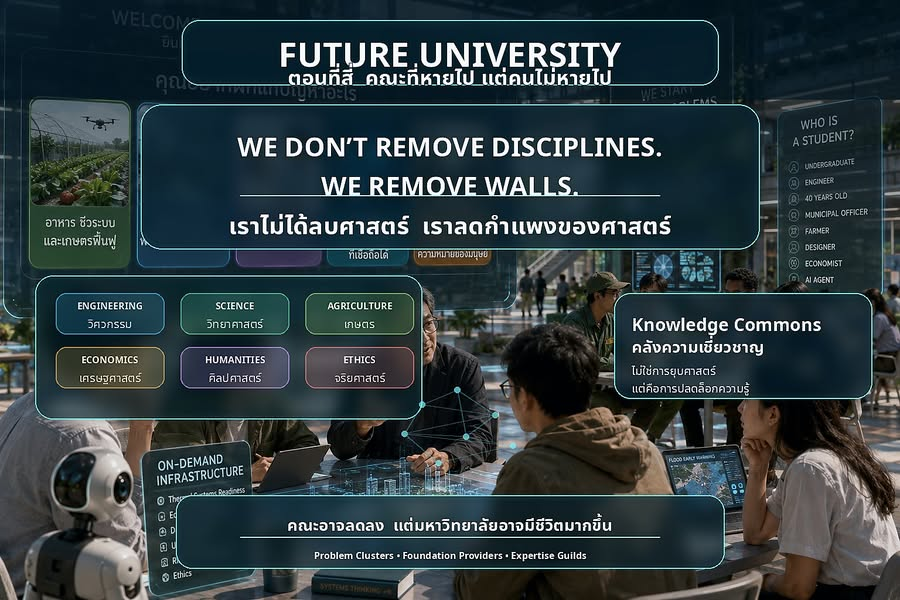

เราไม่ได้ลบศาสตร์ เราลดกำแพงของศาสตร์
{kind=link}

เมื่อมหาวิทยาลัยไม่ได้เริ่มจากรายวิชาอีกต่อไป คำถามที่หลีกเลี่ยงไม่ได้คือ “แล้วคณะจะเหลืออะไร” หากนักศึกษาไม่ได้เริ่มจากการเลือกคณะ การเรียนไม่ได้จัดรอบรายวิชา และทีมแก้ปัญหามีคนจากหลายศาสตร์อยู่ด้วยกัน
คำตอบไม่ควรเป็นการยุบรวมหน่วยงาน เปลี่ยนชื่อ หรือทำให้ทุกศาสตร์ตื้นลง แต่คือการรักษาความลึกไว้ พร้อมรื้อกำแพงที่ขวางไม่ให้ความรู้นั้นทำงานร่วมกัน
สิ่งที่หายไปไม่ใช่ศาสตร์ แต่คือกำแพงของศาสตร์
ฟิสิกส์ คณิตศาสตร์ เศรษฐศาสตร์ วิศวกรรม เกษตร ศิลปศาสตร์ ปรัชญา ประวัติศาสตร์ และการออกแบบยังจำเป็น แต่ไม่มีศาสตร์ใดอยู่เพียงเพื่อปกป้องอาณาเขตของตนเอง
บทบาทของศาสตร์เปลี่ยนจาก เจ้าของรายวิชา เป็น คลังความเชี่ยวชาญ จาก “คณะของฉัน” เป็นความรู้ที่สังคมเรียกใช้เมื่อเจอโจทย์ยาก และจากการสอนเฉพาะ “เด็กของเรา” เป็นการเตรียมผู้คนให้พร้อมเข้าไปอยู่ในปัญหาจริง
จากการประกาศสังกัด สู่การประกาศโจทย์ที่กำลังรับผิดชอบ
ในมหาวิทยาลัยแบบเดิม นักศึกษาเริ่มนิยามตนเองว่าอยู่คณะวิศวกรรมศาสตร์ เศรษฐศาสตร์ มนุษยศาสตร์ เกษตร หรือวิทยาศาสตร์ แต่ใน Future University เขาอาจเริ่มว่า กำลังแก้ปัญหาอาหารปลอดภัย น้ำท่วมเมือง AI สำหรับบริการสาธารณะ ระบบดูแลผู้สูงอายุ หรือความไว้วางใจของประชาชนต่อรัฐ
จากนั้นจึงย้อนถามว่าโจทย์นี้ต้องใช้วิศวกรรม เศรษฐศาสตร์ ข้อมูล กฎหมาย จริยศาสตร์ การสื่อสาร หรือความเข้าใจประวัติศาสตร์และวัฒนธรรมของพื้นที่อย่างไร คำตอบแทบทุกครั้งคือ ต้องใช้มากกว่าหนึ่งศาสตร์
คณะในฐานะคลังความลึก
คณะไม่จำเป็นต้องเป็นอาณาเขตปิด แต่อาจเป็นพื้นที่ดูแลฐานความรู้ แล็บ มาตรฐานการประเมิน การให้คำปรึกษา การตรวจสอบคุณภาพ และการเชื่อมความรู้หลายแขนงเข้าด้วยกัน
ผู้สอน Thermodynamics ยังอยู่ แต่ไม่ได้ทำหน้าที่เพียงพานักศึกษาสอบปลายภาค เขาช่วยสร้าง Thermal Systems Readiness สำหรับโจทย์พลังงาน อาคาร อาหาร และ cold chain ผู้สอนเศรษฐศาสตร์สร้าง Economic Reasoning for Public Problems เพื่อให้ทีมเข้าใจแรงจูงใจ ความเป็นธรรม ต้นทุน ผลกระทบ และการตัดสินใจของคนจริง
ศิลปศาสตร์ก็ไม่ได้ถูกวางไว้เพียงมุม well-being แต่เข้ามาถามกลางสนามว่า ปัญหาสำคัญกับใคร ใครกำหนดความสำเร็จ ใครได้ประโยชน์ ใครรับความเสี่ยง ใครไม่มีเสียง และคำตอบที่สร้างขึ้นทำให้ชีวิตมนุษย์ดีขึ้นจริงหรือไม่
อาจารย์ไม่ได้หายไป แต่บทบาทยากขึ้น
อาจารย์เปลี่ยนจากคนยืนหน้าห้องเป็นผู้ออกแบบสนามฝึก จากผู้บอกเนื้อหาเป็นผู้คุมมาตรฐานของความรู้ จากผู้ออกข้อสอบเป็นผู้ถามคำถามที่ทีมอยากหลบ และจากเจ้าของรายวิชาเป็นผู้รักษาความลึก ความซื่อสัตย์ทางวิชาการ และความรับผิดชอบต่อผลลัพธ์
การบรรยายน้อยลงจึงไม่ได้แปลว่าทำงานเบาลง เพราะการออกแบบโจทย์จริง คุมความเสี่ยง ตรวจความถูกต้อง ประเมินจากผลงาน และช่วยให้คนต่างศาสตร์ทำงานร่วมกัน ยากกว่าการสอนตามสไลด์เดิมมาก
Interdisciplinary ต้องเกิดในโครงสร้าง ไม่ใช่แค่ในเอกสาร
คณะในอนาคตอาจมีจำนวนน้อยลง แต่ความหลากหลายของมุมมองต้องเพิ่มขึ้น ต้องมีพื้นที่ให้คนต่างศาสตร์พบกัน ทำงานร่วมกัน โต้แย้งกัน และรับผิดชอบคำตอบร่วมกันจริง ไม่ใช่เพียงนำชื่อหลายคณะใส่ในโครงการ ตั้งศูนย์ใหม่ หรือเขียนคำว่า interdisciplinary แล้วทุกคนกลับไปทำงานแบบเดิม
โลกจริงไม่แยกปัญหาตามผังองค์กร น้ำท่วมเมืองไม่ได้เป็นของวิศวกรรมอย่างเดียว อาหารปลอดภัยไม่ได้เป็นของเกษตรอย่างเดียว AI ในบริการรัฐไม่ได้เป็นของคอมพิวเตอร์อย่างเดียว สังคมสูงวัยไม่ได้เป็นของแพทย์อย่างเดียว และความไว้วางใจของประชาชนไม่ได้เป็นของรัฐศาสตร์อย่างเดียว
ไม่ใช่มหาวิทยาลัยที่ไม่มีคณะ แต่เป็นมหาวิทยาลัยที่เลิกใช้คณะเป็นกำแพง
คณะอาจไม่ใช่บ้านถาวรของนักศึกษา แต่เป็นบ้านของความลึกทางวิชาการ อาจไม่ใช่เจ้าของรายวิชา แต่เป็นผู้ดูแลฐานความรู้ แล็บ และมาตรฐาน อาจไม่ใช่อาณาเขตที่ต้องปกป้อง แต่เป็นคลังความเชี่ยวชาญที่พร้อมถูกเรียกใช้ในสนามโจทย์
คณะที่หายไปไม่ใช่ความสูญเสีย หากสิ่งที่หายไปคือกำแพง ไม่ใช่ความเชี่ยวชาญ; อาณาเขต ไม่ใช่ความลึก; และรูปแบบการสอนเดิม ไม่ใช่ความรับผิดชอบของอาจารย์
เมื่อนั้นคณะอาจลดลง แต่มหาวิทยาลัยอาจมีชีวิตมากขึ้น เพราะไม่ได้จัดตัวเองรอบตารางเรียน หากจัดรอบปัญหาจริง ความรู้จริง ผู้คนจริง และอนาคตจริงที่เราต้องรับผิดชอบร่วมกัน
บทความที่เกี่ยวข้อง Foundation Cores × Dynamic Frontiers: โครงสร้างมหาวิทยาลัยที่รักษาความลึกและเคลื่อนไหวตามโจทย์ ต่อยอดภาพของฐานความรู้ระยะยาวและพื้นที่แก้ปัญหาแบบยืดหยุ่น ซึ่งเชื่อมคนจากหลายศาสตร์เข้าด้วยกัน